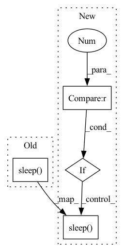

Pattern ID :12155
Before Change
else:
total_success += 1
total_time += tc.duration
time.sleep( 1)
if total_success < args.retries:
default_logger.warning(
"message lost %.0f%% (%d/%d) "
% (After Change
else:
total_success += 1
total_time += tc.duration
if args.attempts > 0 :
time.sleep( 1)
if total_success < args.attempts:
default_logger.warning(
"message lost %.0f%% (%d/%d) "
% (In pattern: SUPERPATTERN
Frequency: 5
Non-data size: 4
Instances Fragment ID: 41014177
Project Name: jina-ai/jina
Commit Name: 11533962629d27a05cc677abd4d5a5e1837a3905
Time: 2022-09-29
Author: joan.martinez@jina.ai
File Name: jina/checker.py
M Class Name: NetworkChecker
N Class Name: NetworkChecker
M Method Name: __init__(2)
N Method Name: __init__(2)
M Parent Class:
N Parent Class:
M File Name: jina/checker.py
N File Name: jina/checker.py
M Start Line: 29
M End Line: 55
N Start Line: 28
N End Line: 74
Before Change
os.environ["CUDA_VISIBLE_DEVICES"] = str(gpus_id)
tf.zeros([size, size, size], dtype=tf.dtypes.float64)
ids.append(gpus_id)
time.sleep( args.times)
return ids
After Change
pass
else:
sca_nums = args.gpu_nums - len(ids)
if sca_nums > 0 :
sizes = [int(compute_storage_size(i)) for i in gpus_memory]
for gpus_id, size in zip(gpus_free[:sca_nums], sizes[:sca_nums]):
ids.append(gpus_id)
print("Scramble GPU {}".format(gpus_id))
_thread.start_new_thread(worker, (gpus_id, size))
time.sleep( 30)
if __name__ == "__main__":
Fragment ID: 41014179
Project Name: wilmerwang/scramble4gpu
Commit Name: f6b4e04c47f04e1a523718a8f6abc8b62bf2a157
Time: 2022-08-21
Author: 280458666@qq.com
File Name: scramble4gpu.py
M Class Name: AnonimousClass
N Class Name: AnonimousClass
M Method Name: main(2)
N Method Name: main(0)
M Parent Class:
N Parent Class:
M File Name: scramble4gpu.py
N File Name: scramble4gpu.py
M Start Line: 71
M End Line: 96
N Start Line: 85
N End Line: 102
Before Change
except botocore.exceptions.ClientError as e:
retry = retry - 1
cli_logger.warning("Remaining {} tries to release elastic ip address for NAT Gateway...".format(retry))
time.sleep( 60)
cli_logger.verbose_error("{}", str(e))
cli_logger.error("Failed to release elastic ip address for NAT Gateway. Please release unassociated ip manually.")
After Change
ec2_client.release_address(AllocationId=allocationId)
except botocore.exceptions.ClientError as e:
retry = retry - 1
if retry > 0 :
cli_logger.warning("Remaining {} tries to release elastic ip address for NAT Gateway...".format(retry))
time.sleep( 60)
else:
cli_logger.error("Failed to release elastic ip address for NAT Gateway. {}", str(e))
raise e
Fragment ID: 41014181
Project Name: oap-project/cloudtik
Commit Name: eacde9fb2ba1f6990059d618ec3af513a05199de
Time: 2022-03-28
Author: haifeng.chen@intel.com
File Name: python/cloudtik/providers/_private/aws/config.py
M Class Name: AnonimousClass
N Class Name: AnonimousClass
M Method Name: release_elastic_ip_address(3)
N Method Name: release_elastic_ip_address(3)
M Parent Class:
N Parent Class:
M File Name: python/cloudtik/providers/_private/aws/config.py
N File Name: python/cloudtik/providers/_private/aws/config.py
M Start Line: 710
M End Line: 717
N Start Line: 714
N End Line: 722
Before Change
f"{peak_mem/GB:5.3f}"]
write_tsv(heads, values, f"{model_type}_megatron_{output_file_name}_rank{rank}.tsv")
print("Sleeping for 30 seconds before starting the next case. ")
time.sleep( 30)
if __name__ == "__main__":
case = eval(sys.argv[-2])After Change
timers.log(names, normalizer=repeat * number)
// Print results
if rank == 0 :
peak_mem = torch.cuda.max_memory_allocated(0)
tflops = compute_gpt_tflops(global_batch_size, seq_len, num_layers,
hidden_size, vocab_size,
torch.distributed.get_world_size(),
np.mean(costs))
tflops_ckpt = compute_gpt_tflops(global_batch_size, seq_len, num_layers,
hidden_size, vocab_size,
torch.distributed.get_world_size(),
np.mean(costs), True)
heads = ["Type", "Model Config", "Parallel Config", "P-mesh shape", "//Microbatch",
"Force DP", "Remat", "Mean Time", "Std Time", "//Params", "TFLOPs", "TFLOPs (ckpt)",
"Peak Mem"]
values = [model_type, str(benchmark_case[1:6]),
str((dp_size, tensor_mp_size, pipeline_mp_size)),
"N/A", str(num_micro_batches), "N/A",
str(checkpoint_activations), f"{np.mean(costs):.3f}", f"{np.std(costs):.3f}",
f"{parameter_count/1e9:.3f}", f"{tflops:.2f}", f"{tflops_ckpt:.2f}",
f"{peak_mem/GB:5.3f}"]
write_tsv(heads, values, f"{model_type}_megatron_{output_file_name}_rank{rank}.tsv")
print("Sleeping for 30 seconds before starting the next case. ")
time.sleep( 30)
if __name__ == "__main__":
case = eval(sys.argv[-2]) Fragment ID: 41014180
Project Name: alpa-projects/alpa
Commit Name: aa3f9769873ce34856e5c644e4e225fd49598e48
Time: 2021-11-29
Author: lianminzheng@gmail.com
File Name: benchmark/megatron/benchmark_gpt_bert_one_case.py
M Class Name: AnonimousClass
N Class Name: AnonimousClass
M Method Name: benchmark_gpt_bert_one_case(2)
N Method Name: benchmark_gpt_bert_one_case(2)
M Parent Class:
N Parent Class:
M File Name: benchmark/megatron/benchmark_gpt_bert_one_case.py
N File Name: benchmark/megatron/benchmark_gpt_bert_one_case.py
M Start Line: 197
M End Line: 217
N Start Line: 160
N End Line: 220
Before Change
logging.warning(
f"read exception occur, sleep 3s to retry num_retry/max_retry {num_retry}/{self.max_retry}\n {e}"
)
time.sleep( 3)
if data is None:
raise IOError("Read file error: %s!" % full_path)
After Change
logging.warning(
f"read exception occur, sleep {retry_wait}s to retry num_retry/max_retry {num_retry}/{self.max_retry}\n {e}"
)
if retry_wait > 0 :
time.sleep( retry_wait)
retry_wait = min(retry_wait * 2, self.max_retry_wait)
if data is None:
raise IOError("Read file error: %s!" % full_path) Fragment ID: 41014175
Project Name: alibaba/easycv
Commit Name: 61456a5271516056813324f83f6d33af682126bb
Time: 2022-12-08
Author: 30484308+Cathy0908@users.noreply.github.com
File Name: easycv/file/file_io.py
M Class Name: IO
N Class Name: IO
M Method Name: _read_oss(3)
N Method Name: _read_oss(3)
M Parent Class: IOLocal
N Parent Class: IOLocal
M File Name: easycv/file/file_io.py
N File Name: easycv/file/file_io.py
M Start Line: 200
M End Line: 200
N Start Line: 178
N End Line: 208